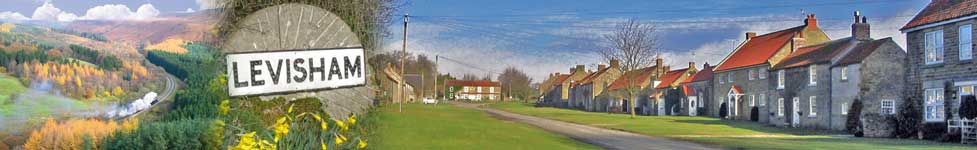
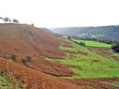

Home
Levisham
Local Area
Meals on Arrival
Booking Information

Menu
Homemade freshly prepared meals made with locally sourced produce
Starters
Vegetable Soup
Mackerel Pate
Continental Pate
(Each served with homemade bread)
Main Course
Steak and Mushroom Pie
Fish Pie
Shepherd's Pie
Local Sausages
(Each served with a selection of local vegetables)
Vegetable Chilli
(Served with baked potato)
Dessert
Apple Pie
Fruit Crumble
(Served with custard or cream)
Fruit Salad
Cheese and Biscuits
Please enquire about prices:
Minimum of 48 hours notice required
Only one main course selection per group
